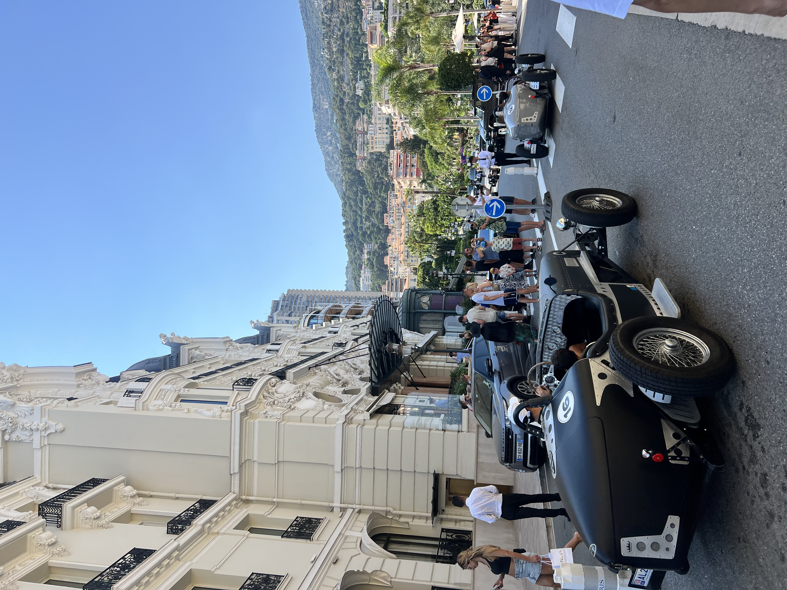
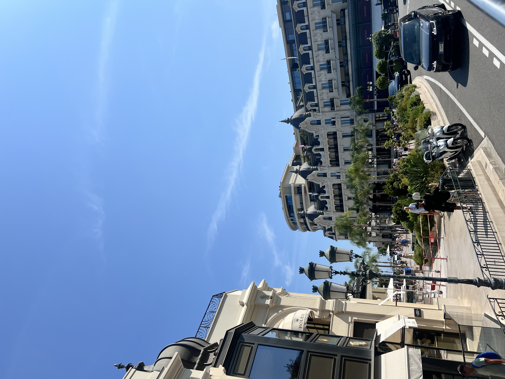
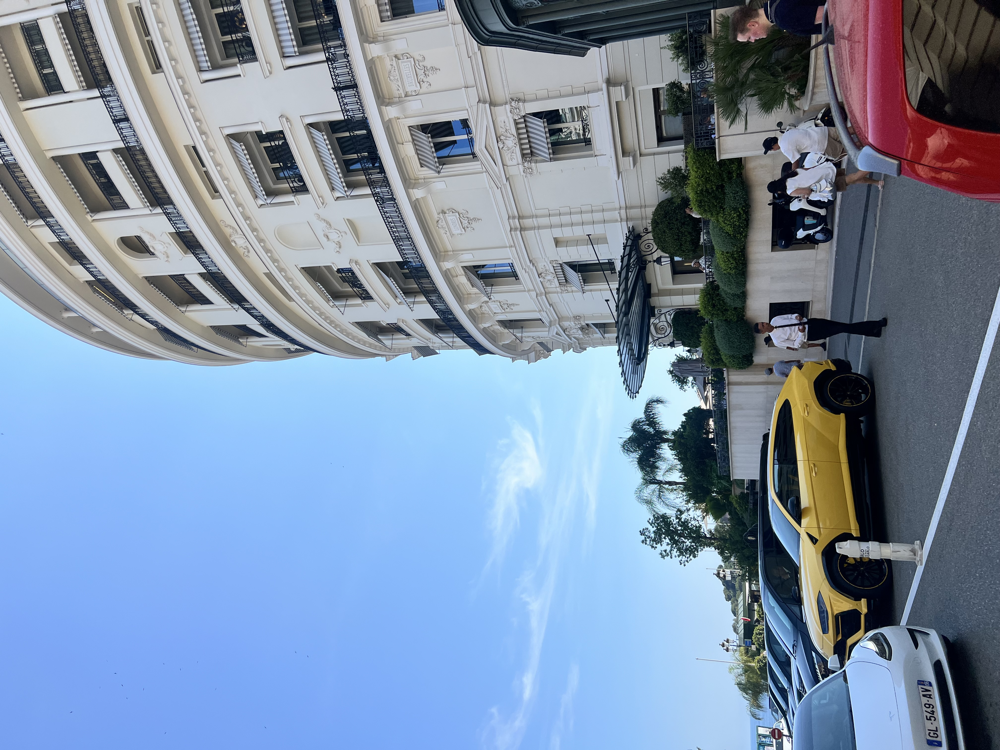

Monaco is tiny—just 2 square kilometers. You can walk across it in 30 minutes. It has more superyachts than parking spaces, and a coffee costs what lunch costs elsewhere on the Riviera. But it's worth visiting.
I recommend it as a half-day trip from Nice. Come to walk the Formula 1 circuit and see the wealth. The key is accepting what Monaco is—a tax haven turned tourist attraction.
Getting There
The easiest way to visit Monaco is as a day trip from Nice. The train takes 25 minutes and costs around €5 each way. Trains run frequently throughout the day, and Monaco-Monte-Carlo station drops you right in the heart of the principality. No advance booking needed—just show up and hop on.
From the train station, everything is walkable, though "walkable" in Monaco means dealing with constant elevation changes. The principality is built on a hillside, so expect stairs, escalators, and public elevators. The upside: excellent views. The downside: your calves will remind you of this for days.



Where to Stay (But You Shouldn't)
Unless you're here for a specific event or genuinely want to burn money, don't stay in Monaco. Accommodation is outrageously expensive, and you're paying for location rather than value. A basic hotel room that would cost €80 in Nice runs €250+ here, and you'll still be in a shoebox.
Stay in Nice instead. It's 25 minutes away by train, has infinitely better restaurant options, actual nightlife, and hotels at reasonable prices. You can visit Monaco for a few hours, see everything worth seeing, and return to a city with actual character. Monaco is a country best experienced in small doses.
Where to Eat (On a "Budget")
Let's be clear: there is no budget dining in Monaco. A sandwich costs what a full meal costs in Nice. A coffee is €7. A sit-down lunch can easily hit €50 per person at the most basic spots. This is a place where even McDonald's feels like a splurge.
Your best bet is grabbing supplies from the Carrefour supermarket near the train station before exploring, or eating in one of the casual spots around Port Hercule where you can get pizza or pasta for "only" €20-25. Stars 'N' Bars is popular with tourists and has American-style food at Monaco prices (read: expensive but not Michelin expensive).
If you want to experience fine dining, book well in advance. Le Louis XV at Hôtel de Paris has three Michelin stars and will cost you €300+ per person. It's exceptional, but you're in Monaco—exceptional is the baseline, and you're paying for the address as much as the food.
What to Do
Monte Carlo Casino is the main attraction, an ornate Belle Époque building that's appeared in countless films. Entry to the gaming rooms costs €17 (yes, you pay to gamble), and there's a dress code: no shorts, no flip-flops, jackets recommended for men. You can visit the atrium for free if you just want photos. Inside, it's exactly what you'd expect—chandeliers, marble, and people losing money in formalwear.
Prince's Palace sits atop Monaco-Ville, the old town perched on "The Rock." The changing of the guard happens daily at 11:55am and is worth catching if you're nearby. The palace is only open for tours in summer (July-September), but the old town itself is charming with narrow streets, souvenir shops, and the best views over the harbor.
Port Hercule is where the superyachts dock. Walking around the harbor is free entertainment—each boat is more absurd than the last, some with helipads, some with submarines, all with price tags that would fund small nations. During the Grand Prix in May, this entire area becomes part of the race circuit.
Exotic Garden (Jardin Exotique) clings to a clifftop and offers incredible views over Monaco and the Mediterranean. It's filled with thousands of succulent plants and cacti from around the world. Entry is around €7 and includes access to a cave system below. The views alone make it worthwhile.
Oceanographic Museum was founded by Prince Albert I and sits dramatically on a cliff edge. The aquarium is impressive, the building itself is stunning, and the rooftop terrace has panoramic views. Entry is €16 for adults. It's well done but expensive—decide if you're truly interested in marine life or just ticking a box.
Formula 1 Circuit Walk: You can walk (or drive, if you have a car) the actual Grand Prix circuit. Start at Sainte-Dévote corner near the train station, walk up to Casino Square, down to Mirabeau, and through the tunnel to Portier. The track runs through public streets, so you're literally walking where the race happens. It's completely free and gives you appreciation for how insane it is to race here at 300 km/h.
A Few of My Favorite Spots
- Walking the Formula 1 circuit
- Monte Carlo Casino exterior
- Exotic Garden for panoramic views
- Port Hercule for yacht-watching
- Prince's Palace changing of the guard
- Oceanographic Museum rooftop
A Half-Day in Monaco
Morning (10am): Take the train from Nice to Monaco-Monte-Carlo. Walk to Casino Square to see the Monte Carlo Casino and watch expensive cars circle the roundabout. Snap photos, marvel at the architecture, maybe pop inside if you're dressed appropriately and want to pay the entry fee.
Late Morning (11:30am): Head up to Monaco-Ville to catch the changing of the guard at 11:55am. Wander the old town streets, visit the cathedral if you're interested, and enjoy the views from the palace square over Port Hercule.
Lunch (1pm): Grab something casual near the port or break out the supplies you wisely bought at the Carrefour. Find a bench with a view and enjoy the free entertainment of watching superyachts come and go.
Afternoon (2pm): Walk the Formula 1 circuit or visit the Exotic Garden if you want views and plants. Alternatively, explore the Oceanographic Museum if marine life interests you. The harbor area is also fine for just wandering and people-watching.
Late Afternoon (4pm): Head back to Nice. You've seen Monaco. It was fun, it was ridiculous, and now you can go somewhere with affordable dinner options.
Practical Information
Money: Everything is expensive. Mentally add 50-100% to what you'd expect to pay elsewhere. The official currency is the Euro, cards are accepted everywhere, and ATMs are plentiful (though you'll rarely need cash since most places prefer cards anyway).
Getting Around: Monaco is tiny. Walk everywhere. Public elevators and escalators connect different levels of the principality for free, making the vertical terrain more manageable. There are buses if you really need them, but honestly, just walk—you'll see more and it's faster.
Casino Dress Code: No shorts, no flip-flops, no athletic wear. Smart casual at minimum. Jacket and tie aren't required for most gaming rooms, but you won't look out of place wearing them. Entry to the gaming rooms is €17, and you must be 18+ with ID. The atrium and surrounding areas are free to visit.
Best Views: Head to the Exotic Garden for panoramic views over the entire principality. The palace square in Monaco-Ville also offers excellent harbor views. For a different perspective, walk up to the Japanese Garden near the Grimaldi Forum.
Timing: Avoid Monaco during the Grand Prix weekend in May unless you've planned specifically for it—everything is exponentially more expensive and crowded. The Yacht Show in September has similar issues. Visit on a random weekday for the best experience.
Photography: Everything is photogenic, but Casino Square and Port Hercule are the money shots. The best light is morning or late afternoon. Don't be that person taking photos of strangers' cars—security is everywhere and doesn't appreciate it.
Duration: Four to six hours is plenty. You can see the highlights, walk the circuit, visit a museum, grab lunch, and still catch an afternoon train back to Nice. This is not a multi-day destination unless you're attending a specific event or genuinely want to experience staying in the world's most expensive shoebox.